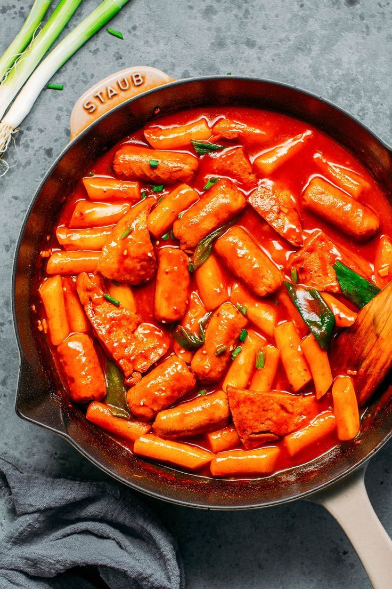
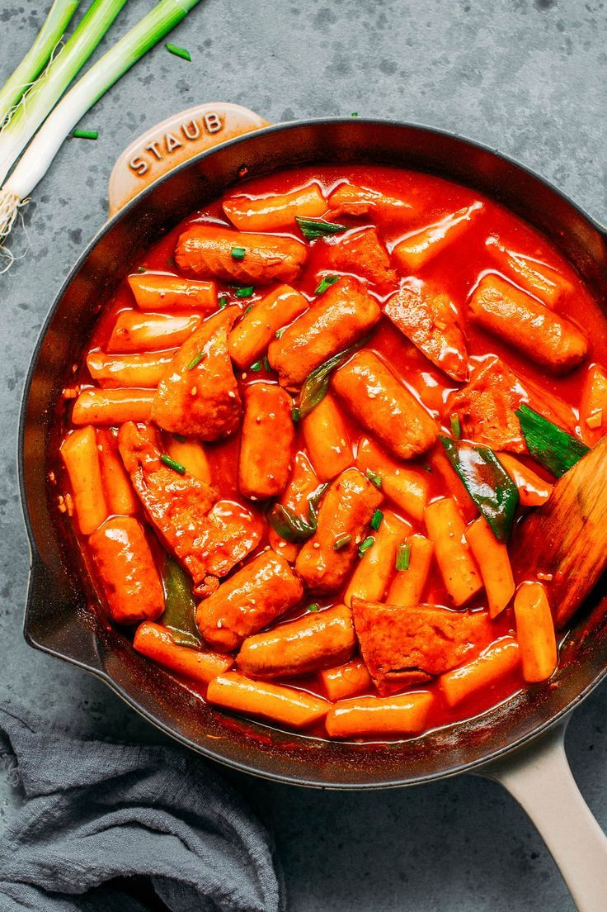

Let's dive into the world of steamy noodles and enjoy the deliciousness of Tteok-bokki with recipes prepared by the top Korean chefs üòãü뮂Äçüç≥
Tteokbokki is one of the most popular Korean street foods in Korea. Among other things, today’s recipe is made with Korean rice cakes, Korean fish cakes, Korean soup stock / dashi stock and gochujang (Korean chili paste)!
 
